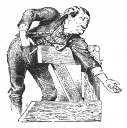

うまい商売
グリム Grimm
矢崎源九郎訳
あるお百姓さんが、牝牛を市場へ追っていって、七ターレルで売ってきました。かえり道に、池のはたをとおらなければなりませんでした。まだ池までこないうちに、もう遠くのほうから、カエルたちが「アク、アク、アク」と、ないているのがきこえてきました。
「まったく、うるさくがなりたてやあがる。」
と、お百姓さんはひとりごとをいいました。
「おらのもらった金は七だぞ。八じゃねえや。」
お百姓さんは水ぎわまできますと、カエルたちにむかって、
「てめえたちゃ、なんてばかだ！ わからねえのかよ。七ターレルだぞ。八じゃねえんだ。」
と、どなりました。
それでも、カエルたちは、やっぱり「アク、アク、アク」と、なきつづけています。
「ようし、ほんとにしねえんなら、てめえたちの目のまえで勘定してみせてやらあな。」
こういって、お百姓さんはポケットから金をとりだして、二十四グロッシェンずつで一ターレルと、合計七ターレルをかぞえあげてみせました。

けれども、カエルたちは、そんな勘定にはおかまいなしに、またもや、「アク、アク、アク」と、なきたてました。
「ええい。」
と、お百姓さんはすっかり腹をたててどなりつけました。
「これでも気がすまねえんなら、てめえたちで勘定しろい。」
そして、カエルたちのいる水のなかへ、金をそっくりほうりこみました。お百姓さんはそのまま立っていました。カエルたちが勘定をすまして、金をかえしてくれるまで、待っているつもりだったのです。ところが、カエルたちはがんこで、ひっきりなしに、「アク、アク、アク」と、なきたてるばかりです。そして、金などはなげかえしてもくれませんでした。
お百姓さんはなおしばらく待っていましたが、そのうちに日がくれてきましたので、うちへかえらなければならなくなりました。そこで、カエルたちを口ぎたなくののしって、どなりました。
「やい、やい、水んなかのバチャバチャ野郎の、でか頭の、ぐりぐり目玉め。てめえたちゃ、ばかでっかい口をしてやがって、耳もいたくなるほどギャア、ギャア大さわぎしゃあがるくせして、七ターレルの勘定もできねえじゃねえか。てめえたちの勘定がすむまで、おらがここで待ってるとでも思ってんのか。」
こういいすてて、お百姓さんは歩きはじめました。しかし、カエルたちは、あいかわらずそのうしろから、「アク、アク、アク」と、ないていました。で、お百姓さんはぷんぷん腹をたてて、うちへかえりました。
それからしばらくして、お百姓さんはまた牝牛を一頭買いました。お百姓さんはそいつを殺して、さて、どのくらいになるだろうかと、胸で計算をしてみました。肉をうまく売れば、牝牛二頭ぶんぐらいの金にはなるでしょうし、それにまだ皮ものこるというものです。そこで、お百姓さんは肉をかついで町へでかけました。町の門のまえまできますと、犬がひとかたまりになってかけてきました。みれば、大きな猟犬が先頭にたっています。そいつが肉のまわりをとびまわって、くんくんかぎながら、「ワス、ワス、ワス、ワス」と、ほえたてました。
ところが、犬がいつまでたってもなきやまないので、お百姓さんは犬にむかっていいました。
「よしよし、わかった、わかった。おめえ、この肉がちっとばかしほしいもんだから、『ワス、ワス（すこしの意味）』っていってんだな。だがな、おめえにこいつをくれちまったら、おらのほうがうまくいかねえでの。」
けれども、犬はやっぱり「ワス、ワス」とへんじをするばかりです。
「おめえ、ほんとに肉をみんなくっちまわねえか。そこらにいるおめえのなかまのことも、うけあえるか。」
「ワス、ワス。」
と、犬がいいました。
「ようし、おめえがそんなにまでいうんなら、おめえにまかせんべえ。おら、おめえをようく知ってる。おめえの奉公さきも、ちゃあんとわかってる。だがな、いいか、三日たったら、きっと金をもらうぞ。約束をまもらなかったら、ただではおかねえぞ。とにかく、おめえがおれんとこへ金をもってきさえすりゃいいんだ。」
それから、お百姓さんは肩から肉をおろして、また、いまきた道をひきかえしました。犬どものほうは、たちまち肉をめがけておどりかかって、「ワス、ワス」と、大声にほえたてました。
お百姓さんはそれを遠くのほうできいて、ひとりごとをいいました。
「ほほう、あいつら、みんなちっとばかしほしがってやがる。だが、でっかいやつが、おらにうけあってるだ。」
三日たちますと、お百姓さんは、今夜は金が手にへえるぞと、考えて、ほくほくしていました。ところが、だれも金をはらいにはやってきませんでした。
「もう、だれも信用できねえ。」
と、お百姓さんはいいました。
とうとう、がまんができなくなって、お百姓さんは町の肉屋へでかけていき、金をはらってくれとねじこみました。肉屋はじょうだんだとばかり思っていましたが、お百姓さんはいいました。
「じょうだんごとじゃあねえ。おら、金をもらうだ。三日めえに、おめえさんとこのでっかい犬が、ぶち殺した牝牛を、まるごともってこなかったかね。」
肉屋はおこって、そこにあったほうきの柄をつかむと、いきなりお百姓さんをたたきだしてしまいました。
「だが、待てよ。世のなかにゃあ、まだ道理ってものがあらあな。」
お百姓さんはこういうと、王さまのお城へでかけていって、うったえごとをきいてください、と、ねがいでました。お百姓さんは、王さまのまえにつれだされました。王さまはお姫さまといっしょにすわっていましたが、お百姓さんを見ますと、どんなめにあったのかと、たずねました。
「ああ、犬とカエルがおらのものをとりましたで。そいから、肉屋のやつは、金のかわりにおらに棒をくらわしたでごぜえます。」
こういって、お百姓さんは、ことのしだいをくわしく話しました。それをきいたお姫さまは、大きな声でわらいだしました。すると、王さまはお百姓さんにいいました。
「いまここで、おまえのもうすことがただしいとはきめられぬが、そのかわり、おまえにはわしのむすめをよめにやろう。むすめは生まれてから［＃「生まれてから」は底本では「生まれでから」］まだいちどもわらったことがない。それがいま、おまえをわらったのだ。わしは、むすめをわらわせたものに、むすめをやると約束してあるのだ。おまえは、幸運のお礼を神さまにもうすがよい。」
「いやあ、お姫さまなんぞいりませんや。うちにゃ、たったひとりのかかあがいますだが、あいつひとりでもおおすぎまさあ。うちへけえりゃ、あっちのすみにもこっちのすみにも、かかあが立ってるような気がしますだ。」
と、お百姓さんはこたえました。
すると、王さまはおこって、
「おまえは礼儀を知らぬやつだ。」
と、いいました。
「でもなあ、王さま。」
と、お百姓さんはこたえました。
「牛からは、牛肉しかとることはできねえでごぜえますでな。」
「待て。」
と、王さまがまたいいました。
「おまえには、べつのほうびをつかわすことにする。いまはさがって、三日たったら、もういちどまいれ。そのとき、五百つかわそう。」
お百姓さんがお城の門のまえまできますと、番兵がいいました。
「おまえはお姫さまをわらわせたな。なにかそうとうのごほうびをいただいたろう。」
「うん、そのとおりだ。」
と、お百姓さんはこたえました。
「五百くださるってえことだ。」
「おいおい、おれにもちっとわけてくんなよ。おまえ、そんなにたくさんの金をもって、どうするんだ。」
「おめえのこったから、二百やらあ。三日たったら、王さまのところへ名のってでて、それだけもらいな。」
と、お百姓さんがいいました。
ひとりのユダヤ人がその近くにいて、この話をきいていました。ユダヤ人は、すぐにお百姓さんのあとを追っていって、いいました。
「すばらしいことになりましたなあ。おまえさんは、なんてしあわせものなんだろう。わたしが両替して、小銭にかえてあげましょう。ターレルのような大きな金じゃ、しようがないでしょうから。」
「ユダ公かい。」
と、お百姓さんはいいました。
「おめえにゃ、まだ三百のこってら。いますぐ、小銭で三百くんな。あと三日たちゃ、王さまんとこで、それだけはらってくださらあ。」
ユダヤ人はちょっとしたもうけにほくほくして、質のわるいグロッシェン貨でこの金額をもってきました。グロッシェン貨なら、三枚でも、質のいい金の二枚ぶんの値うちしかないのです。
三日たったところで、王さまのいいつけどおり、お百姓さんは王さまのまえにでました。
「この男の上着をはぎとれ。」
と、王さまがいいました。
「五百つかわすのだ。」
「あの、もうし。」
と、お百姓さんはいいました。
「その五百は、もうおらのもんではござりません。二百は番兵にくれてやりました。あとの三百は、ユダヤ人が両替してくれましただ。法律のうえからいや、おらのものは一文もねえでござります。」
そこへ、番兵とユダヤ人がやってきて、お百姓さんからうまくせしめたつもりの金を、いただきたい、ともうしでました。そのため、ふたりはまちがいなくその数だけうたれました。番兵はじいっとがまんしていました。もうまえから、この味を知っていたからです。けれども、ユダヤ人はひいひい泣きわめいて、
「ああ、いたっ。これが約束のターレル金貨ですかい。」
と、いいました。
王さまは、お百姓さんをわらわずにはいられませんでした。そして、いままでの腹だたしさもすっかりきえてしまって、こういいました。
「おまえは、ほうびをもらわぬうちに、なくしてしまったから、わしがうめあわせをしてやろう。わしの宝ぐらへはいって、ほしいだけ金をもってくるがよい。」
お百姓さんはすぐさまとんでいって、大きなポケットへ、はいるだけぎゅうぎゅうにつめこみました。それから、茶店へいって、金をすっかりかぞえてみました。
ユダヤ人は、お百姓さんのあとからそっとついていって、お百姓さんがひとりでぶつぶついっているのをききました。
「王さまのとんちきめ、やっぱりおらをだましゃあがった。こんなに金をくれなきゃ、おらの金がいくらあるだか、ちゃんとわかるになあ。これじゃ、手あたりしだいにねじこんだやつが、いくらになるのか、見当もつきゃあしねえ。」
「とんでもねえ。」
と、ユダヤ人はひとりごとをいいました。
「あの野郎、王さまのことを、あんなにひどくいってやがる。ちょいと走ってって、おとどけしてこよう。そうすりゃ、このおれはごほうびがもらえるし、あいつは罰をくらうだろう。」
王さまは、お百姓さんのいったことをききますと、かんかんに腹をたてました。そして、ユダヤ人にむかって、おまえいって、そのふとどきものをひきつれてこい、といいつけました。
そこで、ユダヤ人はお百姓さんのところへかけつけました。
「おまえさん、ぐずぐずしないで、いますぐ王さまのところへいくんだよ。」
「どうすりゃええか、おらのほうがよく知ってら。」
と、お百姓さんがこたえました。
「まず、おらにあたらしい着物をこせえさせてくんねえ。なあ、そうだろ、ポケットにこんなにたくさんの金をもってる男がよ、古いおんぼろ服のまんまでいかれもしねえじゃねえか。」
ユダヤ人は、お百姓さんがほかの上着をきないうちは、とてもつれていくことができないとみてとりました。それに、王さまのいかりがしずまったら、じぶんはほうびももらえなくなりますし、お百姓さんは罰をうけないでもすむかもしれません。そう思いますと、気が気でなくなりました。そこで、
「おまえさんは友だちだから、ちょっとのあいだだけ、おれがきれいな上着をかしてやろう。人間てのは、なんでも愛の気持ちでやるものさ。」
と、いいました。こういわれますと、お百姓さんも承知しました。そこで、ユダヤ人の上着をきて、いっしょにでかけました。王さまは、ユダヤ人のつげ口したわる口のことをいいたてて、お百姓さんをしかりつけました。
「あれまあ。」
と、お百姓さんはいいました。
「ユダヤ人なんかのいうことはうそばっかりでごぜえます。あいつらの口からは、ほんとのことはひとことだってでたことはごぜえません。だいいち、ここにいる野郎なども、おらがこいつの上着をきているなんていいたててますだ。」
「なんだと。」
と、ユダヤ人はさけびました。
「その上着がおれのじゃないと？ そいつは、おまえが王さまのまえにでられるように、つい、気やすい気持ちからかしてやったもんじゃあないか。」
それをきいて、王さまは、
「ユダヤ人は、わしかこの百姓か、どっちかひとりをだましたにちがいない。」
と、いって、またまた、さっきのターレル金貨を、さらにいくつかユダヤ人にくらわせました。
お百姓さんのほうは、いい上着をきて、ポケットにたんまり金をいれて、うちへかえりました。そして、
「こんどは、うまくあてたもんだ。」
と、いいました。
底本：「グリム童話集（1）」偕成社文庫、偕成社
1980（昭和55）年6月1刷
2009（平成21）年6月49刷
※表題は底本では、「うまい商売」となっています。
※誤植を疑った箇所を、「グリム童話集（1）」偕成社文庫、偕成社、1989（平成元）年5月26刷の表記にそって、あらためました。
入力：sogo
校正：チエコ
2020年1月24日作成
2023年9月6日修正
青空文庫作成ファイル：
このファイルは、インターネットの図書館、青空文庫（https://www.aozora.gr.jp/）で作られました。入力、校正、制作にあたったのは、ボランティアの皆さんです。
●表記について
- このファイルは W3C 勧告 XHTML1.1 にそった形式で作成されています。
- ［＃…］は、入力者による注を表す記号です。